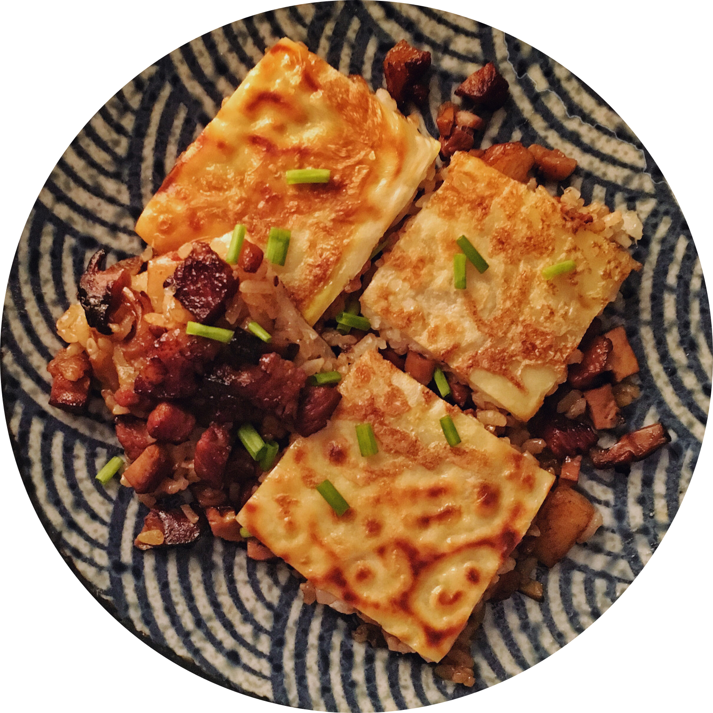
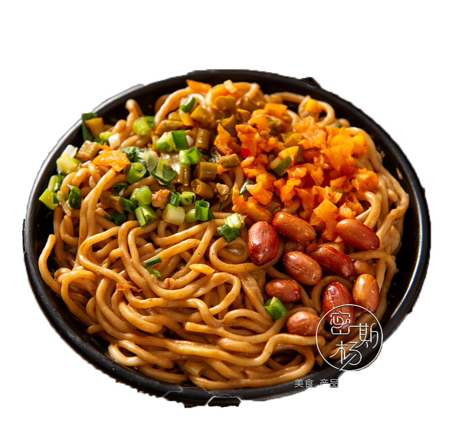
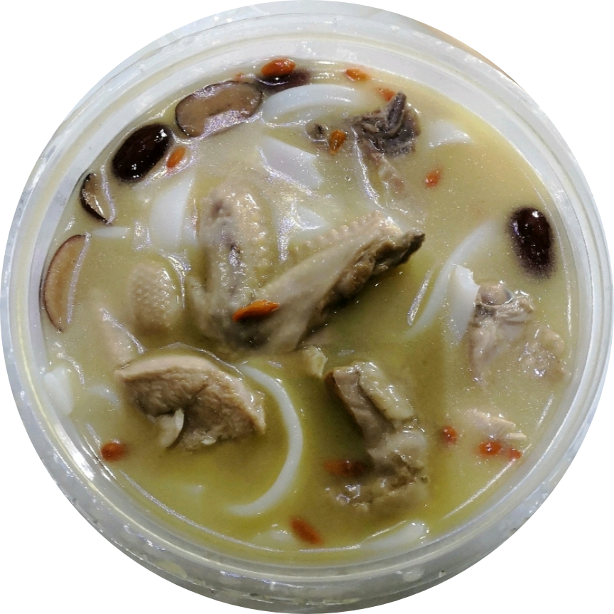
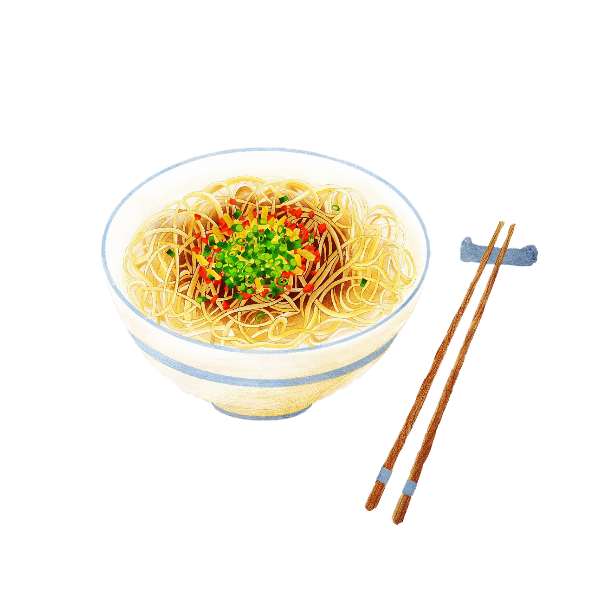
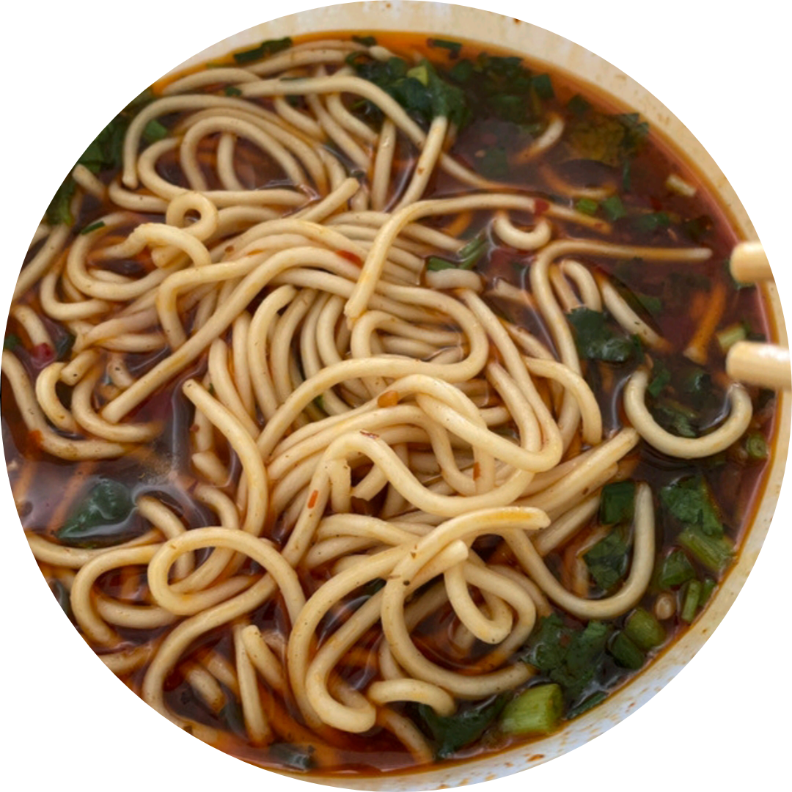
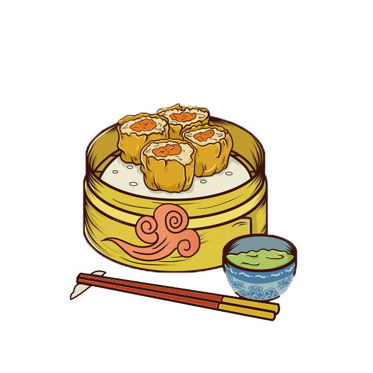
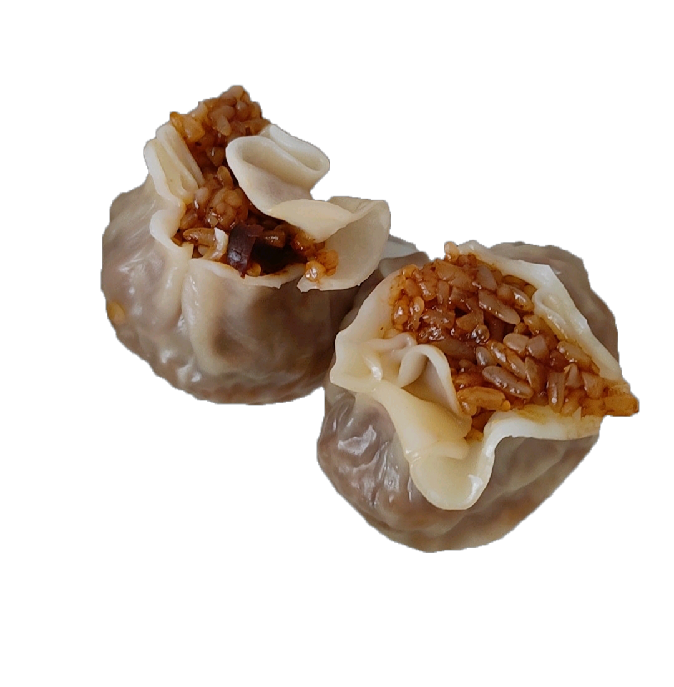
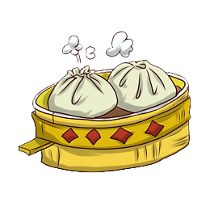
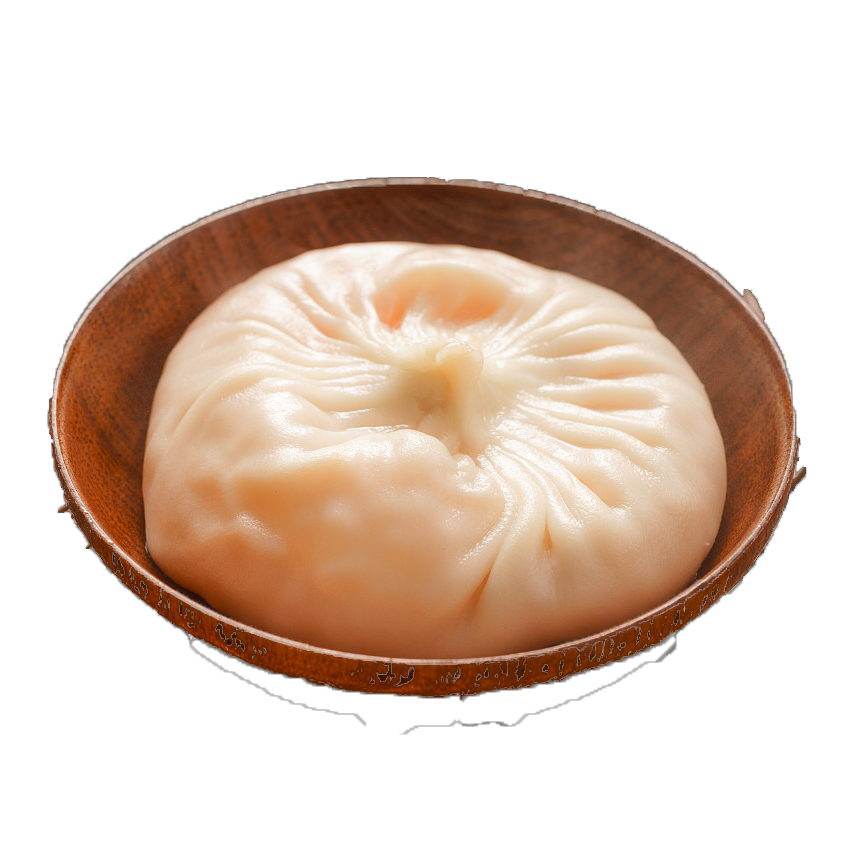
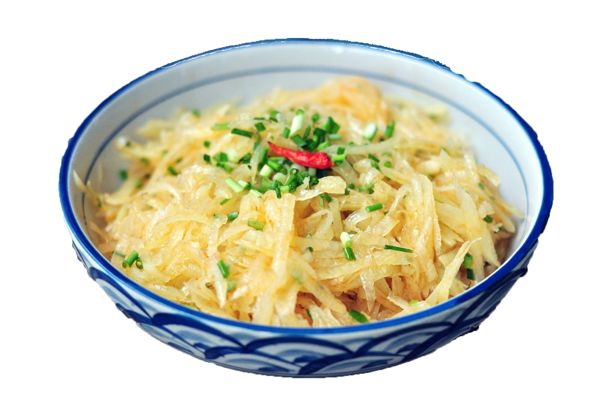

过早文化
武汉之所以形成“过早”的文化，与武汉的重要地理位置密不可分。环抱两江的武汉近代以来是重要的商贸码头。在匆忙的赶工路上来不及吃早餐，只能在路上买着边走边吃。渐渐地，过早成了武汉的一种习惯，一种习俗。“过”字带有着的仪式感，足以表明武汉人对早餐的重视态度；同时，与“吃早餐”这种说法相比，“过早”二字，总是带有着匆忙赶时间的意味。

“老通城”是坐落在汉口中山大道大智路口一家大型酒楼的名字，以经营著 名小吃三鲜豆皮驰名，有“豆皮大王”之称。这家酒楼创办于1931年，某 地原在古汉口城堡大智门外，为城乡通道，故名通城 甜食店，抗日胜利后复业，改名为老通城甜食店。

其采用碱水面，并以食油、芝麻酱、色拉油、香油、红油,细香葱、大蒜子、萝卜丁、酸豆角、卤水汁、生抽、醋等为辅助材料。热干面色泽黄而油润，味道鲜美，由于热量高，也可以当作主食，营养早餐，补充人体所需的能量。

如果要想品味一下武汉的煨汤， “小桃园”是最好的选择。这个小店坐落在汉口胜利街兰陵路， 人称“煨汤专家”。该店经营的主要品种有瓦罐鸡汤、排 骨汤、蹄膀汤、八封汤、甲鱼汤、牛肉汤、鸭汤等。以瓦罐鸡汤最 著名，其原料为产于黄陂、孝感一带的肥嫩母鸡。将鸡块入油锅爆炒，再倒入盛有沸水的瓦罐内 ，用旺火煮熟，小火煨透，汤鲜肉烂，原汁原味，营养丰富。
武汉之所以形成“过早”的文化，与武汉的重要地理位置密不可分。环抱两江的武汉近代以来是重要的商贸码头。在匆忙的赶工路上来不及吃早餐，只能在路上买着边走边吃。渐渐地，过早成了武汉的一种习惯，一种习俗。“过”字带有着的仪式感，足以表明武汉人对早餐的重视态度；同时，与“吃早餐”这种说法相比，“过早”二字，总是带有着匆忙赶时间的意味。
作为九省通衢之地，武汉紧靠着长江这条母亲河，这条从古至今都很繁忙的黄金水道，为了承接货物，流转货物，诞生了大大小小的码头，很多人为了谋生，便在码头扛大包，卖苦力，每天身体热量消耗很大，很需要既能快速填饱肚子，又很实惠的食物。
楚剧,旧称哦呵腔、黄孝花鼓戏、西路花鼓戏,清代道光年间鄂东流行的哦呵腔与湖北省武汉市黄陂区、孝感市带的山歌、道情、竹马、高跷及民间说唱等融合,形成一个独立的地方传统声腔剧种之一,1926年改称楚剧, 距今已有一-百五十 余年的历史。是湖北地区具有广泛影响的地方剧种。
武汉话是大部分武汉居民所操方言。武汉话在方言学的分类系谱上，属于官话方言（北方方言）中的西南官话-武汉-天门片区（武天片），与成都方言、重庆方言、贵州方言等同属一个系谱，也是西南官话地理分布上的最东端，东南端被临界的湘方言、赣方言、官话江淮方言等所包围。

糊汤粉的汤汁，是用两三寸长的野生小鲫鱼熬制成的。天然环境下，自然生长的野生鲫鱼，肉质密实、紧凑，味道异常鲜美。经营糊汤粉的商贩，通常是在头天下午买回活蹦乱跳的小鲫鱼，然后将鱼剖洗干净，放在文火上，整整熬一个通宵。鱼肉熬得不见形，鱼骨几乎熬化了，鱼肉、鱼骨髓全融进了汤里。用鲜活鱼彻夜熬制出的鱼汤，味鲜汁浓，回味带点清甜，含在嘴里，似乎有一股生命气息在齿间游走。用来做糊汤粉的米粉，是用籼稻米磨成浆制成的。米粉像线粉一样细，洁白细长，口感柔韧有劲。


汉口花楼街、交通路交汇处的“顺香居”是一家有着近五十年历史的老店。该店制作的重油烧麦，油重而不腻人，味道鲜美，而且形如银菊，看一眼就叫人胃口大开。烧麦的制作方法是将肥膘猪肉、馒头、橘饼、花生米、冰糖、葡萄干等切成小丁，略微一炒，再用桂花、红绿丝、白糖调合成馅。面粉加水适量，放少许精盐揉和成面团，擀成一张张荷叶形薄皮，放入馅心，加少许麻油包成。烧麦或炸、或烤、或蒸，皆香甜可口，令人食之不厌。


四季美汤包1927年开业，一年四季都有美食供应。有名厨在该店制作江苏风味武汉 化的小笼汤包，肉皮用得新鲜，肉馅要一指膘的精肉，蟹黄汤包要用阳澄湖大鲜 蟹，受到食客的好评，被誉为“汤包大王”，汤包成为主打。最经典的吃法是先轻咬 破表皮，慢慢吸尽里面的汤汁，然后再吃汤包的面皮和肉馅。

“福庆和”坐落在汉口中山大道，在六渡桥一带，以经黄陂风味的豆丝著称。 粉质钦滑，味鲜可口。豆丝是武汉市黄陂区三大传统小吃之一（其他还有 黄陂三鲜、黄陂糍粑）。吃客唐鲁孙：“谈到吃牛肉，黄陂的牛肉豆丝，固 然远近知名，上海弄堂汽油桶的牛肉汤，倒也货真价实，腴而不腻。是长江 中下游区域的农家传统食品，主要分布在湖北东南部、安徽西南部及江西。 豆丝是用大米、绿豆等按一定比例打浆摊成饼并切成条状此时为软的湿豆丝 ，当然为了便于保存可切丝晾干成为干豆丝。
